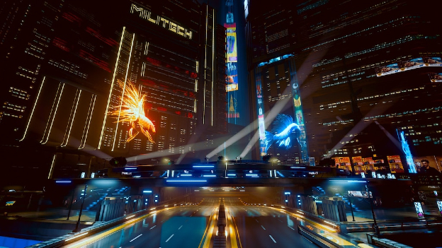

Founded on the shores of Coranado Bay, California in 1994 by the ideolouge billionare Richard Night, Night City has served as an indipendent and free city of commerce and
prosperity for well over 100 years. Surviving through all four of the Corporate Wars, Night city is a bastion of hope in a divided America.
A melding pot of culture, companies, and other diversities, you too can be fully enriched in the many cultures of Night City. From the bustling eastern markets of Kabuki
and Jig-Jig Street, to the diverse southern flavours of Watson, Heywood, and The Glen, to the glamour of North Oak and the Corporate Plaza, Night City has something for everyone.
This site encompases everything a person needs for a first time trip into Night City, from must-see attractions (and places to avoid) to great places to eat, shop and more, this site
has it all.
Located in the Waston district, Kabuki is a famous marketplace full of things to do. From the "Tech Wizards"
selling cyberdecks and in-house tech, to the various ripperdocs and weapon shops, the Kabuki pavillion has something
for everyone. Founded on the once-abondoned medical pavillion of a dissolved corporation, an influx of Chinese immigrants
transformed the shell of a building into a pavillion packed to the brim with stalls and small buisness, and while Watson
might not be the safest distirct in Night City, Kabuki is most definitely its crown jewel.

The plaza today was rebuilt following the Unification War.
From the Holo-Fish projections and Zan Garden to the towering headqueaters of Arasaka, Kang Tao, and Militech, the Corpo
Plaza is one of Night City's most famous locations. Rebuilt following the bombing of Arasaka Tower and Reunification War,
the Plaza stands as a bastion of the free economy that Night City was built on. Perhaps one of its most famous attractions
is its multi-level garden, a green paradise in the heart of Night City's concrete jungle. From fine clothing stores to
luxury penthouses and bars, Corpo Plaza is not lacking in things for a tourist to do.
Located in the eastern area of Night City, Japantown was founded my the many japanese coroprate workers,
who over the years created a unique and iconic district of Night City. From the many Pachinko parlors and walk-in
casinos, to the nightclubs and open air night markets and stalls, Japantown is the beating heart of NC's
Nightlife.